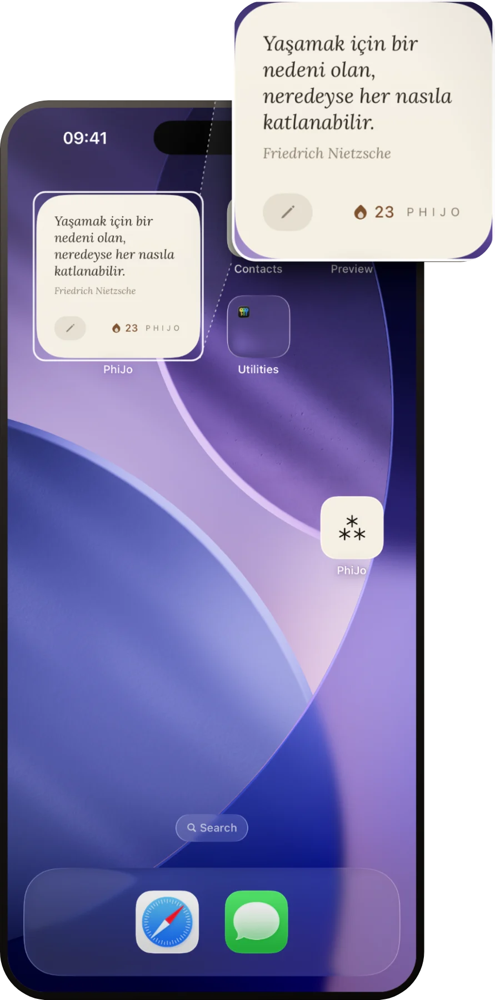
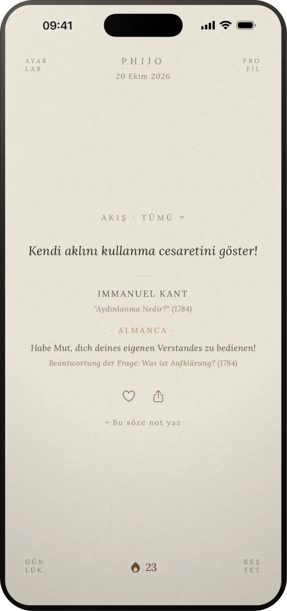
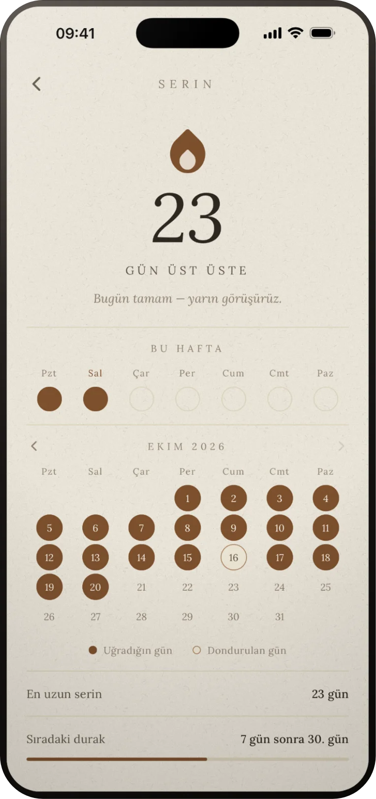

Bir söz
Kışın derinliklerinde, içimde yenilmez bir yaz olduğunu nihayet öğrendim.
Albert Camus, Tipasa'ya Dönüş
Au milieu de l'hiver, j'apprenais enfin qu'il y avait en moi un été invincible.
Fransızca
PhiJo her gün tek bir söz gösteren ücretsiz bir iPhone uygulaması. Bugün açsan yukarıdaki sözü görürdün.
Widget
Ana ekrana ve kilit ekranına eklenir. Söz, uygulamayı açmasan da her gün kendi kendine değişir. Serin de alt köşede görünür.
Widget'ta günün sözü yerine sana göre seçilen sözü gösterebilirsin. Premium'da kendi sözlerini de.

Akış
Günün sözünün altında sana göre seçilmiş bir söz, onun altında da sonu gelmeyen bir akış var. Neyi okuyup neyi geçtiğine göre sıralanır. Bir temaya ya da takip ettiğin yazarlara daraltabilirsin.
Ücretsiz sürümde günde 10 söz, Premium'da sınırsız.

Seri
Uygulamayı açtığın günler takvimde işaretlenir, serin büyür. Bir gün kaçırırsan dondurma hakkın seriyi korur. Seri tablosunda başkalarıyla da kıyaslayabilirsin.

Günlük
Bir söze not yazınca not, ana ekranda o sözün üstünde yapışkan kâğıt gibi durur. Basılı tutup istediğin yere çekebilirsin. O söz bir daha karşına çıktığında notun yine orada olur.
Bütün notlar Günlük'te tarih sırasıyla durur. İstersen Face ID ya da PIN ile kilitlenir.
Sekiz tip
İlk açılışta sekiz soru soruluyor, sonunda sekiz felsefi tipten birine yerleşiyorsun. Sana göre sözler buradan başlıyor, sonra beğendiklerine göre değişiyor.
Stoa Bilgesi
Bilgeliği, erdemi ve sabrı önemseyen; dışsal şeylerin gücüne boyun eğmeyen tutum.
Sözün aslı
Sözler elle seçiliyor. Kaynağı belirsiz, internette elden ele dolaşan alıntıları almamaya çalışıyoruz. Ekim 2026 itibarıyla 287 söz var; 226'sının yanında yazıldığı dildeki metni de duruyor.
-
Non exiguum temporis habemus, sed multum perdidimus.
-
Περιγράψας ἑαυτὸν τῷ παρόντι
-
Habe Mut, dich deines eigenen Verstandes zu bedienen!
49 yazar
Ücretsiz
- Günün sözü
- Sana göre günde 1 söz
- Akışta günde 10 söz
- Ana ekran ve kilit ekranı widget'ı
- Seri ve seri tablosu
- Günlük ve kilidi
- Favoriler, yazar ve tema takibi
- Son 3 günün sözleri
Premium
- Sınırsız akış
- Sana göre günde 3 söz, derin profil analizi
- Son 30 günün sözleri
- Kendi sözlerin
- Kişisel özet, günlüğü dışa aktarma
- Bütün yazı tipleri ve boyutları
- Widget stilleri ve kendi metnin
- Paylaşım stilleri, uygulama simgeleri
- Güne 3 bildirim saati
Premium yıllık abonelik (7 gün ücretsiz deneme) ya da tek seferlik ömür boyu ödeme olarak alınır. İki sürümde de reklam yok.
Bize yaz
Hata, öneri ya da yanlış bulduğun bir atıf varsa doğrudan buraya yazabilirsin. PhiJo'yu Türkiye'den Alperen Kara yapıyor.
PhiJo'yu indir
iOS 15.1 ve üstü. Türkçe ve İngilizce. Hesap açmak gerekmiyor; notlarını başka cihaza taşımak istersen e-posta, Apple ya da Google ile bağlarsın. Android sürümü testte, Google Play'de henüz yok.